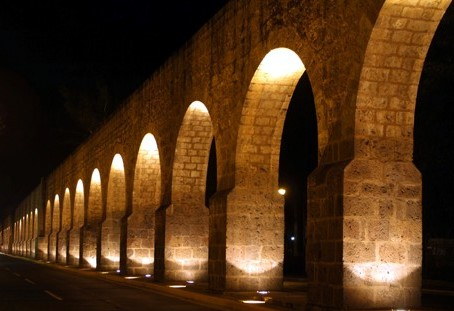
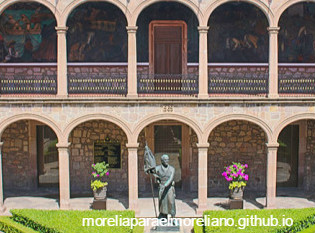

Morelia para el moreliano
"La cultura es la memoria del pueblo, la conciencia colectiva de la continuidad histórica, el modo de pensar y de vivir." Milan Kundera
Moreliaparaelmoreliano.com es un sitio de difusión cultural que los ciudados de Morelia, tengan conocimiento de todos los eventos que se den en la ciudad como eventos culturales, eventos de musica, eventos de cine, de pintura.
Todos los eventos que se muestren aqui solo seran en la ciudad de Morelia, aqui se podran subir eventos, de que son, los dias, si son de paga o son gratituitos y donde seran.
Atractivos turísticos de Morelia
Biblioteca Pública

Acueducto de Morelia
Callejon del romance
 Tarascas de Morelia
Tarascas de Morelia

Colegio de San Nicolas
 Calzada
Calzada
Tweet